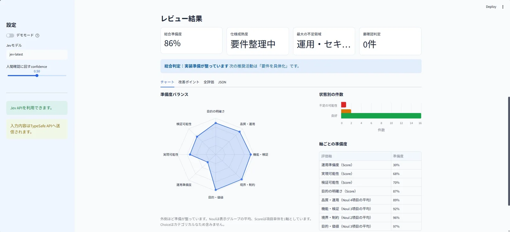
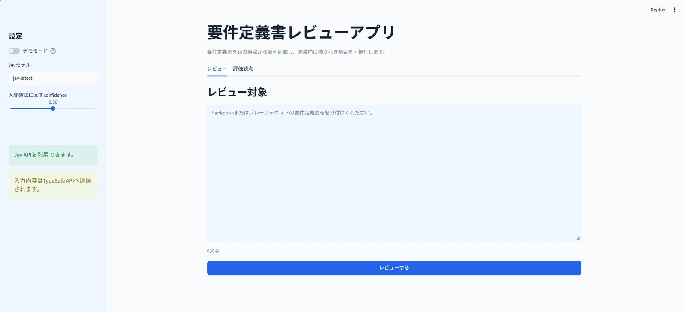

体験
3種類の型の答えを、ひとつの画面の異なる場所へ割り振っている。数値になるものはレーダーと総合準備度へ、分類は上段の札へ、と型の違いが表示の違いになっている。
- 確信度の確認が、点数より優先される。作者は、点が高くてもJevが自信を持てていない項目は「良好」ではなく「人間が見るべき項目」として扱うと説明している。閾値は左のスライダーで動かせ、画面では0.50になっている。
- Noulは確信度を返さないため、0.5からの距離を確信度として計算し、3種類の型を同じ基準で人間確認へ回せるようにしている。
- 19項目をそのまま軸にせず、Noulの12項目を4つのグループに平均して、Scoreの4項目と合わせた8軸にしている。Choiceは数値ではないので、レーダーにも総合準備度にも入れない。この扱いは画面の注記にも書かれている。
- 改善ガイダンスの文面はJevが書いたものではなく、アプリ側の固定の文である。作者は、判断はJev、何を書けばよいかの知識は人が管理する、という分担だと説明している。
- APIキーが無いときは、外部へ送信しないデモモードで起動する。中身は単純なキーワード一致で、UI確認用であることを画面でも警告していると作者は書いている。2枚目の画面には、入力内容が外部のAPIへ送信される旨の注意が出ている。
- 1枚目では総合準備度が86%で「実装準備が整っています」となる一方、運用準備度は30%で、最大の不足領域にも運用の領域が挙がっている。平均した値と、弱い軸の両方が同じ画面に出ている。
キャプチャ
{kind=link}

（原寸の画像を開く）{kind=link}

（原寸の画像を開く）見る箇所1枚目は上段の4つの値（総合準備度、仕様成熟度、最大の不足領域、要確認判定）、総合判定の帯、4つのタブ、準備度バランスのレーダー、状態別の件数、軸ごとの準備度の表。2枚目は左の設定欄（デモモード、Jevモデル、「人間確認に回すconfidence」のスライダー、入力内容が外部へ送信される旨の注意）と入力欄
入力から画面の変化まで
-
判断への入力
貼り付けた要件定義書（Markdownまたはプレーンテキスト）。本文は1回だけ送られ、19の質問がそれを共有する。「書かれていることだけで判断し、足りなければ低く評価する」という方針も一緒に渡す。
-
Jevの判断
19の質問を1回の呼び出しで並列に評価する。内訳は、記載の有無を確率で返すNoulが12、5段階で採点するScoreが4、仕様成熟度・次に行うこと・最大の不足領域を分類するChoiceが3。
-
結果がUIをどう変えるか
総合準備度（％）と3つの分類結果が上段に出る。レーダーと横棒グラフで全体を見せ、不足項目は「不足の可能性、人間確認、補強推奨」の順に改善ガイダンス付きで並ぶ。全19項目の一覧と、結果のJSONのダウンロードがある。
- 判断型の見立て
- Noul / Score / Choice出典に明記
- 記事が19問の内訳をNoul 12、Score 4、Choice 3と明記し、質問の定義を掲載している。
Jevとの適合
同じ文書に多数の独立した問いを当てる用途は、質問ごとに並列で評価され、互いに影響しないというJevの性質に合う。作者は、19問でも体感の遅延は変わらず、1回のレビューは0.01円以下だと申告している。判定の正しさは記事では評価されておらず、テストの13ケースは外部APIを使わないアプリ側の処理の確認である。
確認範囲と未確認事項
日本語の作者によるQiita記事と、記事内の画面画像2枚を確認。記事は全ソースコードを本文に掲載しているが、リポジトリや公開サイトは示されておらず、この作業ではコードを実行していない。掲載した画面は作者の手元（ローカル）で動かしたもので、何を入力した結果かは記事に書かれていない。遅延と費用についての記述は作者の申告である。
- 確認済み記事本文、記事に掲載されたソースコードの説明部分（質問の内訳、確信度の計算、総合スコアの集計、レーダーの軸の畳み方）、記事内の画面画像2枚
- 未検証アプリの実行、判定の正しさ、改善ポイント・全評価・JSONの各タブの画面、デモモードの画面、遅延と費用
- 推定扱いなし（質問型と内訳は記事に明記）。掲載した結果画面のもとになった入力文書は不明
- 引用記事内の画像を引用。ブラウザーのタブやブックマークの部分を切り落とし、アプリの画面だけを掲載した。権利は作者に帰属する